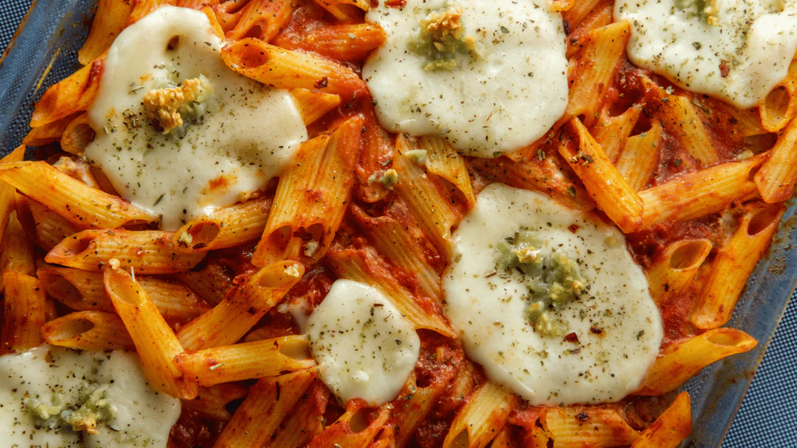

Home
Ziti Al Forno

Description
A specialty of the Campania region, and particularly well-loved in buzzing Naples, ziti are long dried pasta tubes that are traditionally broken into shorter pieces just before they’re cooked. The result is a shape that's a little smaller than rigatoni.
Baked ziti (ziti al forno) is the quintessentially Neapolitan preparation for this pasta shape, with the broken tubes baked in a rich tomato sauce strewn with a trio of cheeses (mozzarella, ricotta, parmesan) and topped with fresh basil.
This dish may have originated in Campania, but it was an American TV series that made it truly famous. From its very first episode, The Sopranos put baked ziti on the American culinary map – family matriarch Carmela Soprano's baked ziti recipe is a regular feature of Sunday dinners throughout the iconic series.
Baked ziti is hugely satisfying yet easy to throw together, so it's perfect for a mid-week meal or for feeding a crowd. Indeed, in Naples baked ziti is the dish of choice for family feasts, holidays and celebrations – simply serve with a light green salad and enjoy straight from the oven.
Ingredients
- 2 tbsp olive oil
- 1-2 cloves garlic, crushed
- half a tsp chilli flakes
- 500g tomato passata or 2 tins of chopped tomatoes
- 1 tsp salt
- Freshly ground black pepper, to taste
- 350g ziti
- 120g ricotta cheese
- 50g Parmesan, grated
- 250g mozzarella cheese, roughly chopped
- 15g fresh basil leaves, roughly torn
Steps
- Preheat your oven to 190°C (170°C if you have a fan oven).
- Bring a large pot of boiling water to the boil and add a generous pinch of salt. Cook your ziti as per the instructions on the packet.
- Whilst the ziti cooks, heat your olive oil in a large pan or skillet. Cook the garlic together with the chilli flakes and cook for a few minutes. Keep an eye on it to ensure that it does not brown.
- Add the tomato passata or the chopped tomatoes to the pan and bring to a gentle simmer. Season with a little salt and pepper and a few basil leaves.
- When the pasta is cooked, remove from the heat and drain off the water.
- In a large bowl, mix the ricotta and the Parmesan together to form a creamy filling, adding a little pinch of salt to taste.
- Add all of your tomato sauce to the drained pasta and toss to coat thoroughly. Then fold in the ricotta and mozzarella mixture. It doesn’t have to be thoroughly combined as having pockets of ricotta will add to the finished dish.
- Transfer the pasta mixture to an oven-proof dish and sprinkle a layer of Parmesan and basil leaves on top.
- Bake the ziti in the preheated oven for around 30 minutes, until the top is golden brown and the edges are beginning to bubble.
- Allow to cool for a few moments and then serve your ziti bake with another sprinkling of basil leaves. Buon appetito!